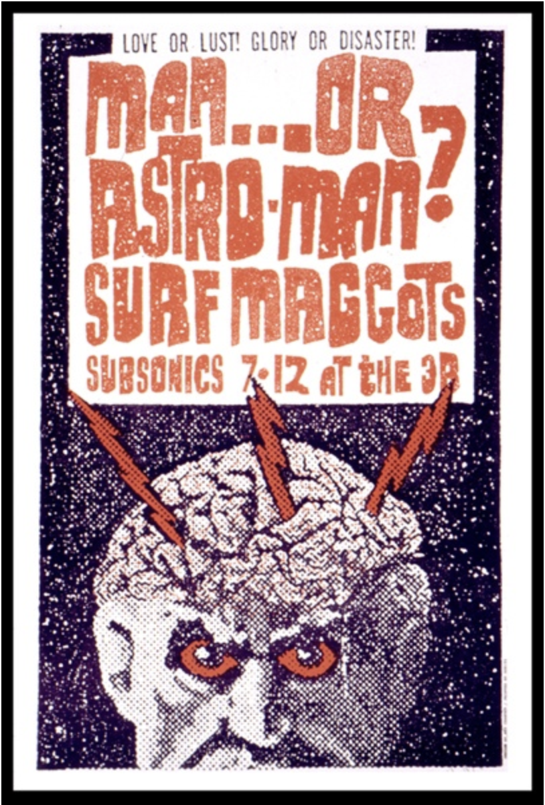
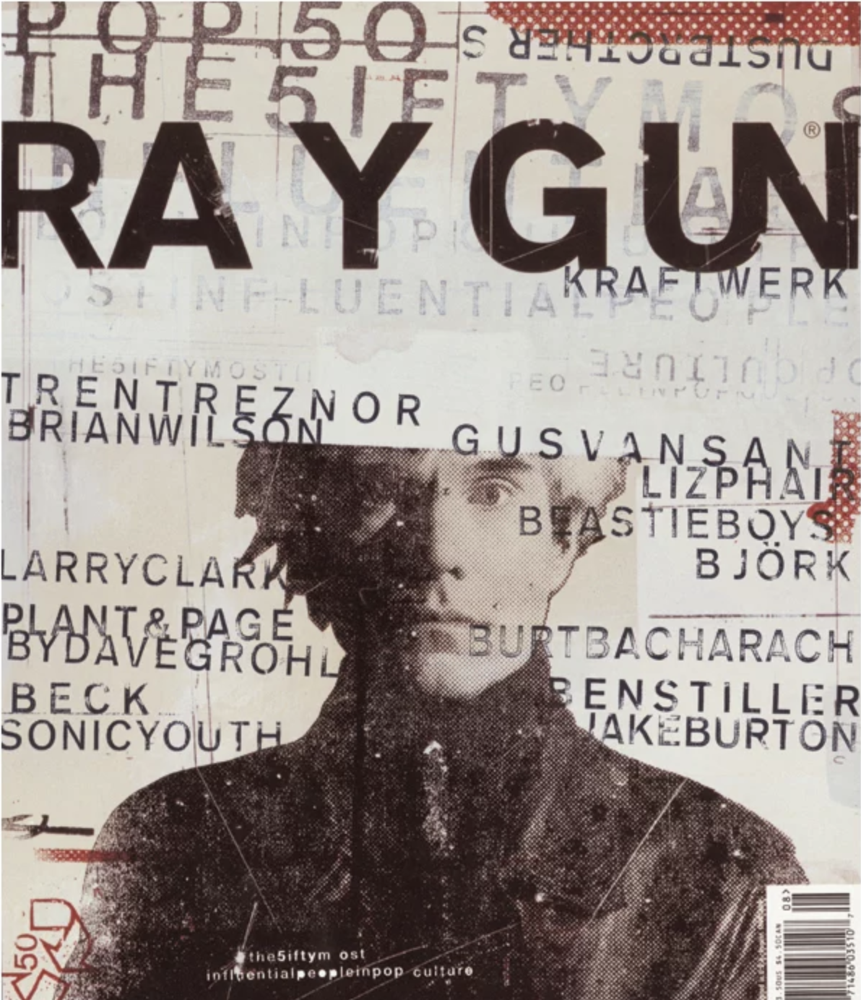

When grunge was cool...
It's the Nineties.

The nineties were dominated visually (and musically) by grungy funk. Much of design moved away from the fun colors of the 1980s into the deeper, darker and dirtier tones. Think lots of broken fonts, sans serif and "rough" details.

